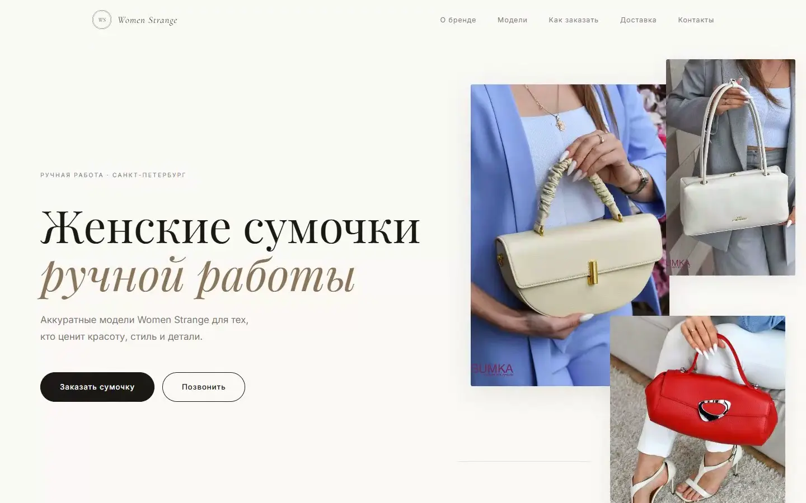
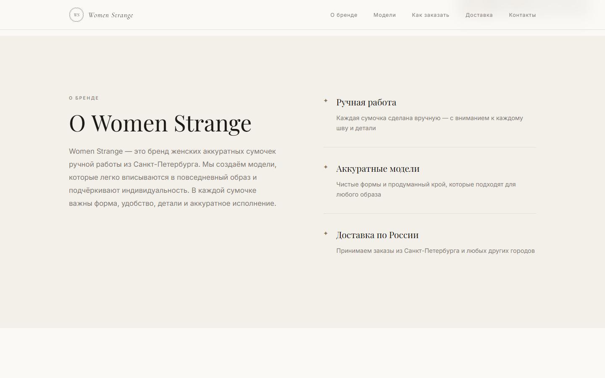
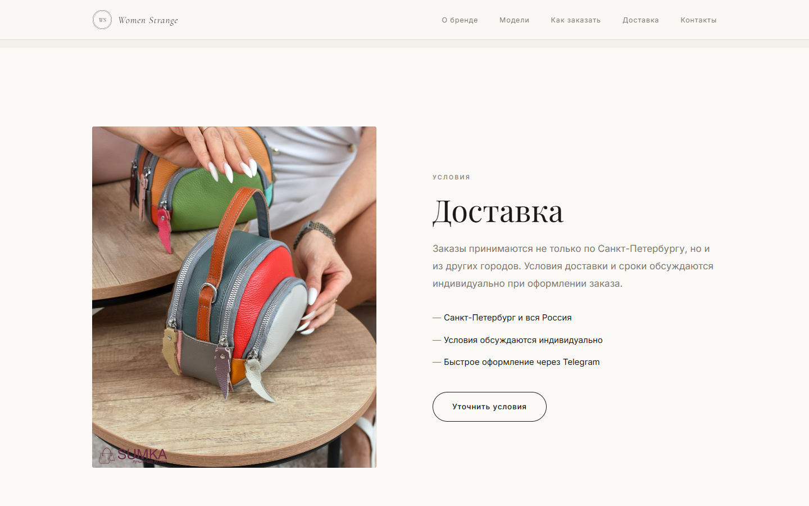
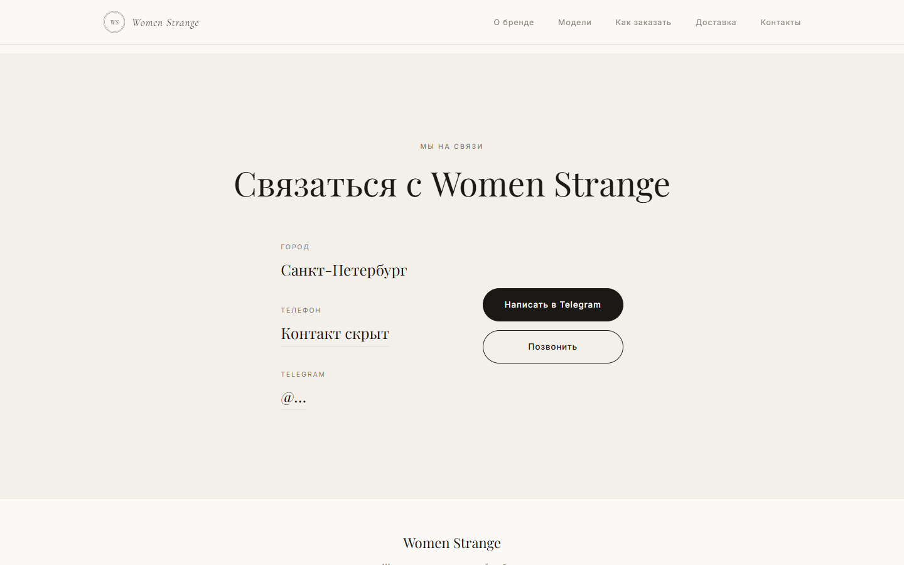

WomenStrange

HANDMADE · SAINT PETERSBURG
Настоящий сайт бренда и исходные фотографии. Кнопки приведены к единому округлому стилю.
Здесь изделие важнее интерфейса: форма, фактура, цвет и рука мастера задают весь ритм.
Весь
storefront.
Бренд → модели → заказ → доставка → контакты. Один непрерывный проход по реальному статическому сайту.
PRODUCT STORY
Не каталог.
Маленькая
редакционная история.



MOBILE WALKTHROUGH
Сумка
остаётся
главной.
Меню, модели, заказ и контакты проверены на 390 px. Все CTA используют одинаковое округление.
DELIVERY / CONTACT